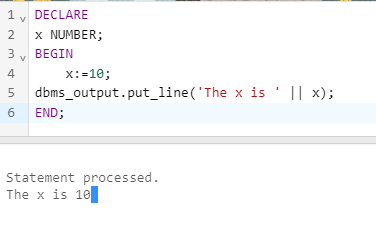

Procedures
Procedures are the subprograms that can take input parameters and perform some operations, and may return values
or output parameters. They are stored in the database and can be called from other programs or procedures.
- Procedures are created using the CREATE PROCEDURE statement.
- Procedures can be stored in the database and can be reused by other programs or procedures.
- Procedures can have input parameters, output parameters, or both.
- Procedures can be called from other programs or procedures using the CALL statement.
- Procedures can be used to encapsulate complex logic and improve the performance of the database.
Types of Procedures:
- Named Procedures: Procedures that have a name and can be called using the name.
- Un-named Procedures: Procedures that do not have a name and are created and executed in a
single step.
- Stored Procedures: Procedures that are provided by Oracle and can be used for specific tasks.
Example:
